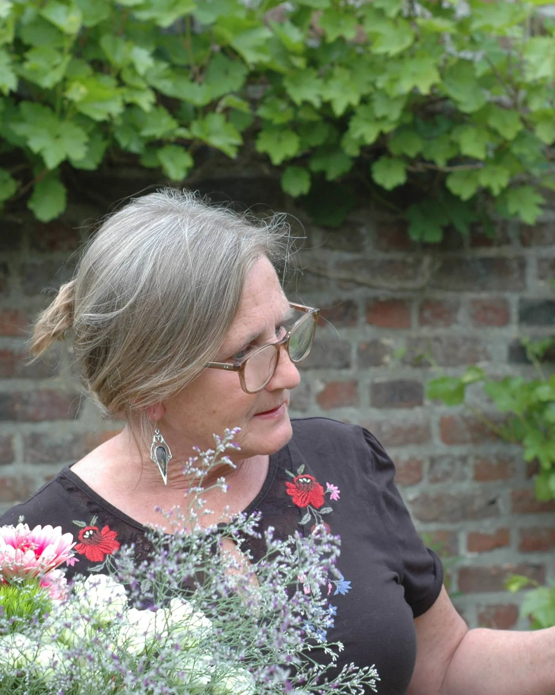
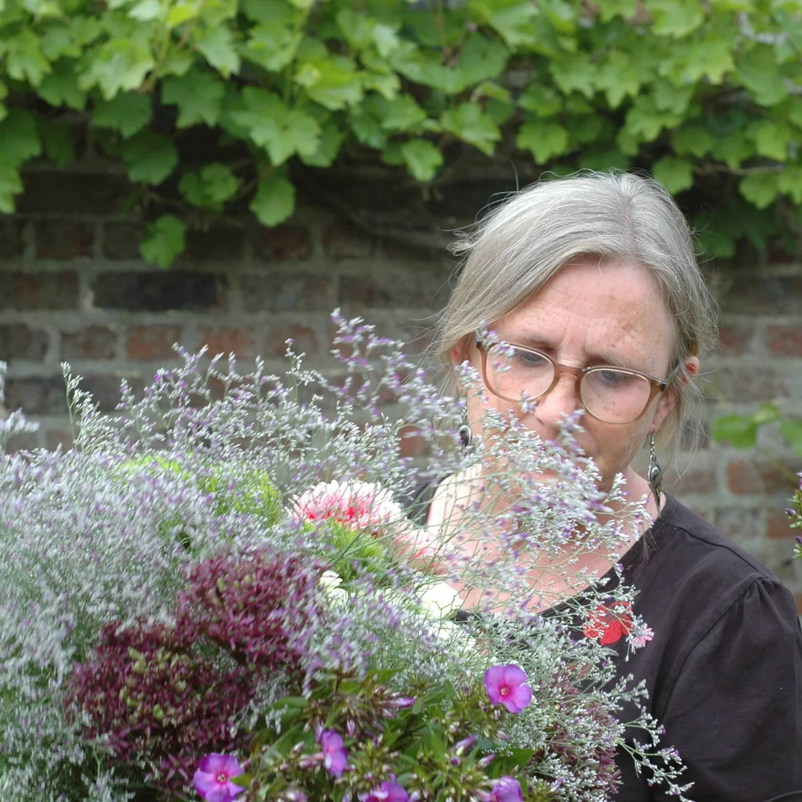
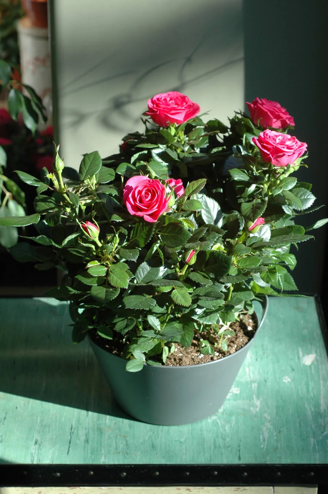
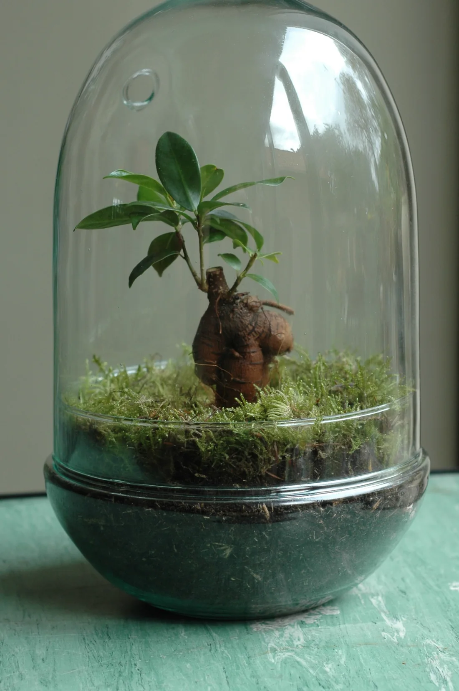
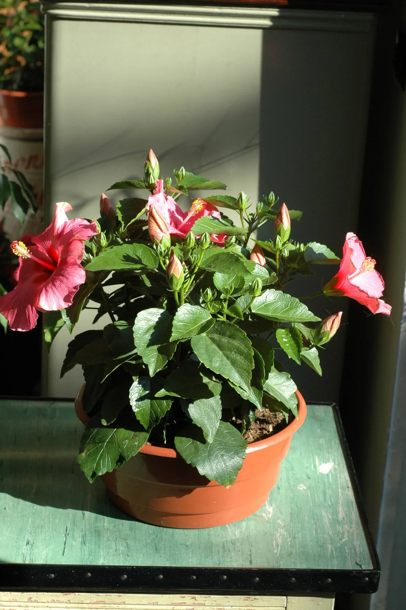

Bloemisterij in Wulvergem
Niet zomaar een muurbloempje.
Boeketten, bloemstukken en kamerplanten van Katelijne, aan de Kemmelstraat in Heuvelland. Kom kiezen in de winkel, of laat Kaat iets moois voor je binden.
5,0★★★★★17 reviews op Google

Kemmelstraat 93
Kom gerust binnen.
Bij Ten Kate sta je meteen tussen de bloemen. Katelijne helpt je kiezen en neemt de tijd om je boeket samen te stellen, naar jouw smaak.
Naast snijbloemen vind je er kamerplanten, orchideeën en in het voorjaar pelargoniums en perkgoed voor de tuin.




Bloemenabonnement
Altijd bloemen op tafel.
Dol op bloemen, maar geen tijd om ze te gaan halen? Of zoek je een cadeau waar iemand lang plezier aan heeft? Met een abonnement maakt Katelijne op vaste momenten een vers boeket.
Vraag een abonnement aan- 01Hoe vaakJe kiest hoe vaak je een boeket wil.
- 02Hoe grootJe kiest hoe groot het mag zijn.
- 03Wat er bloeitKatelijne maakt het met wat er die week mooi is.
Op Google
Met een gulle glimlach.
uit 17 reviews
“We zijn hartelijke ontvangen door de uitbaatster. We waren opzoek naar een boeketje voor een verjaardag. Er werd speciaal een boeket samen gesteld naar onze smaak en tijd genomen om de mooie stukken samen te stellen.”
“Altijd hartelijke ontvangst bij Kate! Helpt je bij je keuze en maakt sublieme boeketten die lang goed blijven! En alles voor schappelijke prijzen.”
“Vorig jaar waren we een weekend in de Westhoek en brachten we een bezoek aan Ten Kate. Ik kocht toen deze mooie pelargoniums, die ik overwinterde. Ze staan er prachtig bij nu.”
Bestellen
Bloemen voor iemand?
Vul in wat je zoekt en wanneer je het nodig hebt. Je bestelling staat meteen klaar in WhatsApp en Katelijne laat zo snel mogelijk iets weten.
- Maandag en dinsdag
- op bestelling
- Woensdag en donderdag
- 9u tot 14u
- Vrijdag en zaterdag
- 10u tot 18u
- Zondag
- 10u tot 12u
Kemmelstraat 93, 8952 Wulvergem
0479 40 74 24 · katelijne@bloemisterijtenkate.be